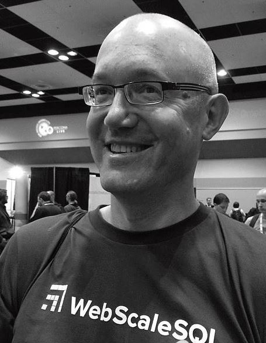

Mark Callaghan, Facebook
Title: Incremental vs Rewrite from Scratch - a Biased Guide to Building a Web-scale OLTP Service
Slides: Download
Abstract: Many OLTP deployments in the web-scale industry start with a single-node open-source DBMS, add automation to manage many instances of the DBMS and then work with an open-source community to make things better via a large number of small improvements. The end result is far from perfect but frequently good enough to allow a business to focus on something other than the DBMS. The result is also frequently misunderstood by members of the DBMS community from academia and industry. I have been part of the incremental webscale DBMS effort for almost 10 years and think there is much to be gained by reducing this misunderstanding. We have interesting data management problems but are often far removed from our peers in industry and academia. In this talk I will explain why we used the incremental approach, where it has thrived and failed, and our priorities when considering new solutions.
Bio: Mark Callaghan worked with great teams to make MySQL better for scale-out deployments at Facebook & Google for 9+ years. His current focus at Facebook is the analysis and improvement of database algorithms and storage systems for small data (OLTP) workloads. He also works with WebScaleSQL and RocksDB to make MySQL and MongoDB better. Prior to his web-scale work he spent many years working on RDBMS internals at Oracle and Informix. He invented and implemented a very fast general purpose sort algorithm for the Oracle RDBMS. He has an MS in CS from UW-Madison.
Alan Fekete, University of Sydney
Title: The Service Contract Between Cloud Provider and Consumer: Consistency Properties
Abstract: There is a wide diversity of choices for a consumer who needs a data store to hold the information for a cloud-hosted application. Some stores are run as services by the cloud provider, others may be deployed and administered directly by the cloud consumer in infrastructure from the cloud provider. Some stores use a document model, others are relational, or graph, or they may even offer just a key-value CRUD interface. In this talk, we focus on the consistency properties. What can the consumer be confident of, when several operations are performed on the same data? We aim to help the consumer make some sense of the many alternatives from real systems and from research proposals.
Bio: Alan Fekete is Professor of Enterprise Software Systems within the School of Information Technologies at the University of Sydney. His undergraduate education was at the University of Sydney, and his doctorate was earned in the mathematics department of Harvard University. Professor Fekete has been an academic at the University of Sydney since 1988, and was promoted to Professor from 2010. He has been recognized as a Distinguished Scientist by ACM for “significant accomplishments in, and impact on, the computing field”. He is on the Executive Committee for IEEE’s Technical Committee on Data Engineering, and has repeatedly served on the Program Committee for major database conferences including SIGMOD, VLDB, ICDE and CIDR. His research has focused on transaction management, and he is also active in computer science education.